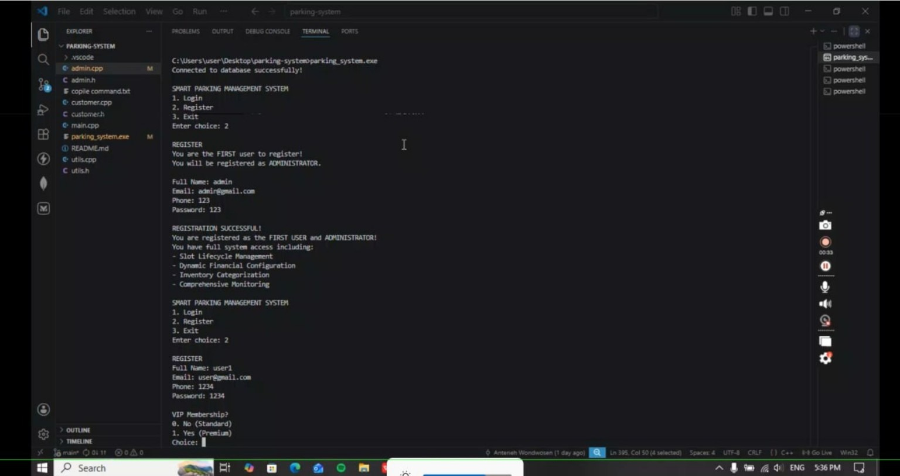
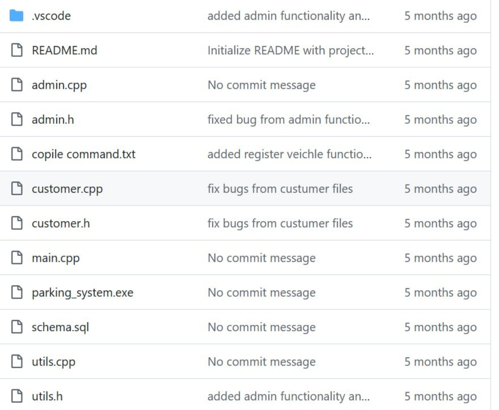

Running application screenshot from the group project.
Repository Structure

Repository screenshot showing the project's
source files and database schema.
Project type: Team project
Course context:
Fundamentals of Programming
Technologies visible in the repository:
C++ source and header files, with an SQL schema file.
The repository is organised into separate files
for admin and customer components, shared utility
functions, the main program and an SQL database
schema. It also contains a compiled application
named parking_system.exe.
The running screenshot shows the registration
menu, creation of the first administrator account,
a later user registration flow and a VIP membership
selection prompt. The administrator registration
message lists access to slot lifecycle management,
dynamic financial configuration, inventory
categorisation and system monitoring.
What I Learned
-
How a C++ program can be separated into
multiple source and header files.
-
Why organising code into focused components
makes a project easier to maintain.
-
How teamwork and communication support
collaborative software development.
-
How to review a shared repository and
understand the structure of a group project.
-
How a console application can guide users
through registration and account choices.
How Our Team Developed the Project
- Discussed the requirements of the parking management system.
- Designed the program structure and divided it into modules.
- Used C++ to develop the main program, administrator and customer features.
- Connected the application to a MySQL database.
- Tested the program and corrected errors.
Project Repository
Open the AASTU FOP Project — Group 2 on GitHub